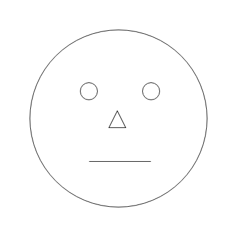
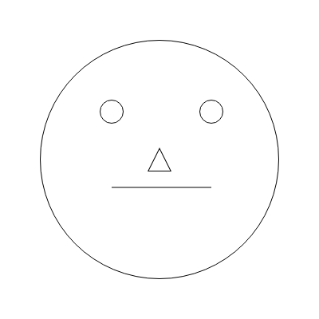

Open Adobe XD
Create an 400px by 400px artboard
All shapes in this drawing will have #FFFFFF fill, and a #000000 border of 1px
Create a circle that is 300px by 300px in the center of the artboard
In the center of the northwest quadrant for the circle, create a 30px by 30px circle
Repeat this in the northeast quadrant of the circle
In the center of the 300px circle, create a 30px by 30px triangle
From the triangle, go down 50px and create a straight horizontal line
The ends of the line should be in light with the center of the 30px cicles
Export the artboard
Send the image to me at cloh@masonlive.gmu.edu
Original
Computer
